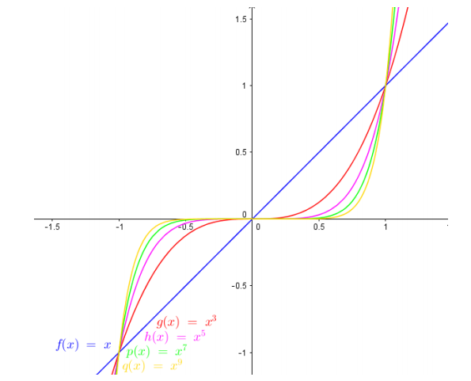
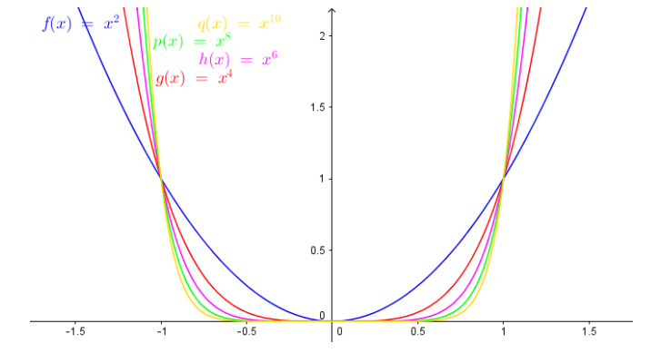
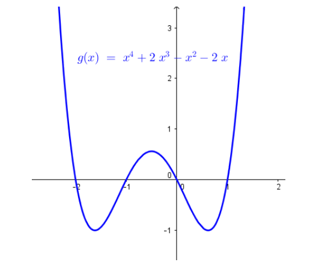
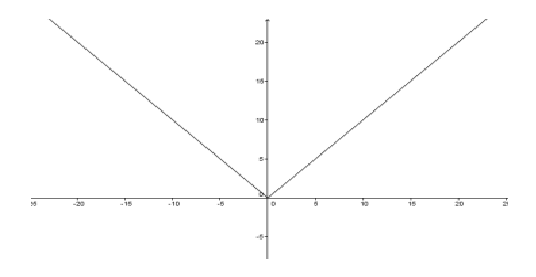
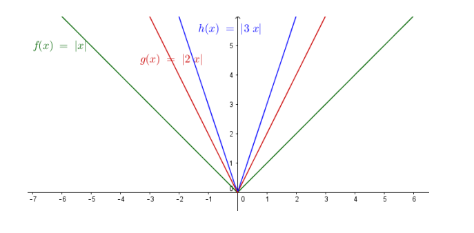
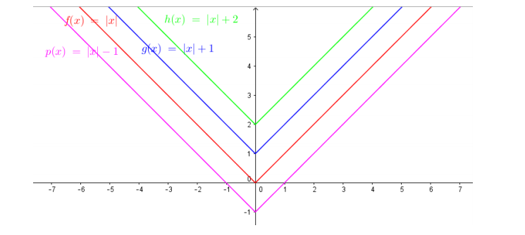
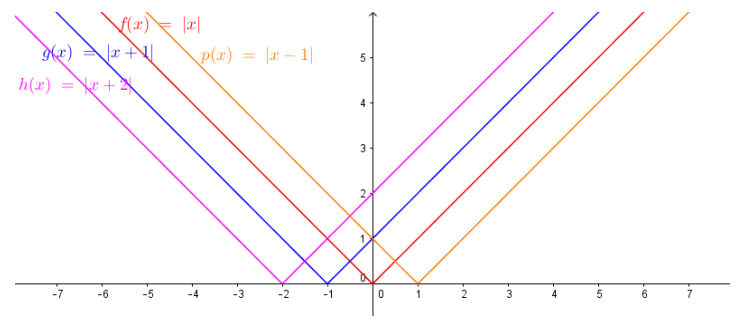
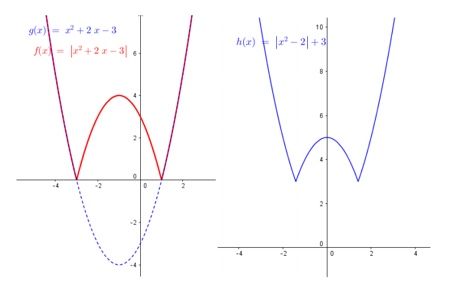

Funções Modulares
É a função f : ℝ → ℝ definida por f(x) = a 0x n + a1xn-1 + a2xn-2+ ... + an - 1x 1 + a n , onde a0, a1, a2, an ≠ 0 , são números reais chamados coeficientes e n, inteiro não negativo, determina o grau da função.
As funções de 1º e 2º grau, são polinomiais também.
O gráfico de uma função polinomial é uma curva que pode apresentar pontos de máximo e
mínimos.
Seu domínio é D(f) = ℝ
Por exemplo:
Família de Funções polinomiais de grau ímpar do tipo f(x) = xi
, sendo i = 1, 3, 5, 7, ...

Família de Funções polinomiais de grau par do tipo f(x) = xp
, sendo p = 2, 4, 6 e 8

Função polinomial de grau 4 com as 4 raízes reais

OBS: Uma função polinomial de grau n possui no máximo n raízes.
Função Modular
Dizemos que o módulo ou valor absoluto de um número, é uma operação
que “deixa” o número positivo. Ou seja,
|+2| = 2 e |-2| = 2
Quando temos uma variável dentro do módulo, precisamos considerar que o valor numérico
desta variável pode ser positivo ou negativo.
|x| = 3 →
x = +3
ou
x = −3
Equação Modular
|x + 1| = 2
↡
x + 1 = 2 ou x + 1 = -2
↡
x = 1 ou x = -3
Função Modular
Denominamos função modular a função f, de ℝ em ℝ, tal que f(x) = |x|, onde:
|x| =
x, para x ≥ 0;
-x, para 0 > x;
O conjunto domínio é D(f) = ℝ e o conjunto imagem é Im(f) = [0, +∞]

Gráfico
Variando o coeficiente do x. Todas as funções possuem Im(f) = [0, +∞)

Somando e subtraindo valores numéricos da função

Im(g) = [1, +∞),Im(h) = [2, +∞)e Im(p) = [−1, +∞)
Somando e subtraindo valores numéricos dentro do módulo. Todas as funções possuem Im(f) =
[0, +∞)

Função Modular de uma função do 2º grau: reflexão da parte negativa.
Im(f) = [0, +∞)

Construção do gráfico
Para construir o gráfico manualmente, primeiramente fazemos o gráfico que está dentro do módulo. Logo após, refletimos a parte que possui y negativo para a que possui y positivo e, se houver algum número somando ou subtraindo fora do módulo, então movemos o gráfico para cima ou para baixo.
Então, primeiramente esboçamos o gráfico da função que está dentro do módulo.
Refletimos nela a parte negativa e positiva da função
Por último, deslocamos a função refletida para cima com 3 unidades